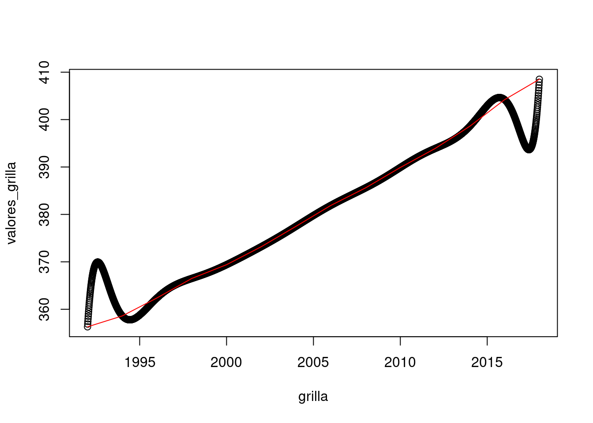
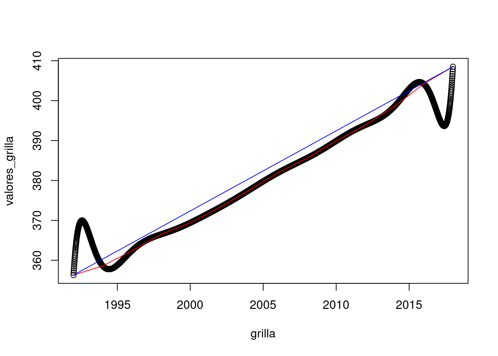

Clase 3 Funciones - DataFrames
Esta es la guía de ejercicios correspondiente a la clase 03. En este caso la guía tiene 2 partes: Funciones y DataFrames. Cada parte se entregará por separado (con distintas fechas de entrega máxima, consultar en el campus). Deberá entregar todos los ejercicios en un archivo .R. Cada ejercicio debe estar resuelto entre comentarios que indique secciones dentro del archivo.
Algunos de los temas necesarios para resolver esta guía no fueron incluidos en la teórica, muchos se encuentran en este documento, mientras que otros deberán ser investigados (por ejemplo, buscando en internet). El ejercicio de buscar cómo abordar/resolver problemas en internet es casi tan importante como poder resolverlos.
Además de escribir los programas pedidos deberán probarlos y dejar constancia de las pruebas realizadas, además de explicitar si anduvo como era esperado o no.
3.1 Parte A: Funciones
Se desea tener una función que tome un valor como parámetro que representa una temperatura en grados Farenheit, y retorne el valor equivalente en Celsius. Más info https://www.lmgtfy.es/?q=formula+formula+fahrenheit+a+celsius. Puede tomar como referencia el siguiente código incompleto:
de_celsius_a_farenheit <- function(grados_c){ res <- grados_c * 9/5 + 32 return(res) } de_celsius_a_farenheit(30)## [1] 86## [1] 50Escribir otra que se comporte a la inversa.
de_farenheit_a_celsius <- function(grados_f){ res <- (grados_f - 32) * 5/9 return(res) } de_farenheit_a_celsius(90)## [1] 32.22222## [1] 7.222222## [1] 20Escribir una función que junte las funcionalidades de las 2 anteriores. Para hacerlo agregue un parámetro extra que si es TRUE la entrada se asume en Celsius (y se espera la salida en Farenheit) y si es FALSE se asume la entrada en Farenheit.
calcular_equivalencia <- function(grados, en_celsius){ if(en_celsius){ res <- de_celsius_a_farenheit(grados) } else { res <- de_farenheit_a_celsius(grados) } return(res) } calcular_equivalencia(10, TRUE)## [1] 50## [1] 122## [1] 10Escribir una función que tomes 2 parámetros, el tamaño de una lado y la cantidad de lados de un polígono regular y que devuelva el perímetro
## [1] 24## [1] 30## [1] 40## [1] 135Escribir una función que tome un vector (que se asume tiene al menos 1 elemento) y un segundo parámetro e indique si dicho vector lo contiene o no. Dar 2 implementaciones:
Con ciclos
contiene <- function(vs, i){ res <- FALSE for (v in vs) { if (v==i) { res <- TRUE } } return(res) } contiene(c(1,3,5,7), 2)## [1] FALSE## [1] TRUESin ciclos (con funciones de vectores)
## [1] FALSE## [1] TRUE
Escribir una función que tome la altura y el peso de una persona y devuelva el índice de masa corporal (
IMC = peso / altura^2).## [1] 25.24934Escribir una función que tome un valor
ay un vectorvec(que asumimos contiene aa). La misma deberá recorrer el vector con un ciclo y retornar el número de posición en la se encuentraa.posicion <- function(a, vec){ i <- 1 while (vec[i]!=a) { i <- i + 1 } return(i) } posicion(3, c(1,2,4,5,6,3))## [1] 6## [1] 1Escribir una función que tome un valor
ay un vectorvec. La misma deberá indicar cuántas veces el valor a aparece en el vector vec. Pensar 2 implementaciones: confory conwhile.cantidad_apariciones <- function(a, vec){ i <- 1 contador <- 0 while (i<=length(vec)) { if (vec[i]==a){ contador <- contador + 1 } i <- i + 1 } return(contador) } cantidad_apariciones_2 <- function(a, vec){ contador <- 0 for (elem in vec) { if (elem==a){ contador <- contador + 1 } } return(contador) } cantidad_apariciones(3, c(1,2,4,5,6,3))## [1] 1## [1] 1## [1] 4## [1] 4Escribir una función que calcule la suma de los primeros n naturales. No vale usar fórmulas cerradas, ni funciones pre-definidas que lo calcule, implementarla usando ciclos
while.suma_primeros_n <- function(n){ suma <- 0 while (n > 0) { suma <- suma + n n <- n - 1 } return(suma) } suma_primeros_n(3)## [1] 6## [1] 55Escribir una función que calcule el producto de los primeros n naturales. No vale usar fórmulas cerradas, ni funciones pre-definidas que lo calcule, implementarla usando ciclos
while.prod_primeros_n <- function(n){ suma <- 0 while (n > 0) { suma <- suma * n n <- n - 1 } return(suma) } prod_primeros_n(3)## [1] 0## [1] 0Escribir una función que dado un número natural calcule un paso de la función de Collatz. Recordar que dice:
\[ collatz(n) = \begin{cases} n/2 &\mbox{si n es par} \\ (3n + 1) & \mbox{si no } \end{cases} \]
un_collatz <- function(n) { if (n %% 2 == 0) { n <- n / 2 } else { n <- 3 * n + 1 } return(n) } un_collatz(7)## [1] 22## [1] 16## [1] 82Escribir una función que dado un número natural calcula la secuencia generada por la función de Collatz hasta alcanzar el 1.
sec_collatz <- function(n) { res <- c(n) while (n!=COMPLETAR) { n <- COMPLETAR res <- COMPLETAR } return(res) }sec_collatz <- function(n) { res <- c(n) while (n!=1) { n <- un_collatz(n) res <- c(res, n) } return(res) } sec_collatz(7)## [1] 7 22 11 34 17 52 26 13 40 20 10 5 16 8 4 2 1## [1] 32 16 8 4 2 1## [1] 27 82 41 124 62 31 94 47 142 71 214 107 322 161 484 ## [16] 242 121 364 182 91 274 137 412 206 103 310 155 466 233 700 ## [31] 350 175 526 263 790 395 1186 593 1780 890 445 1336 668 334 167 ## [46] 502 251 754 377 1132 566 283 850 425 1276 638 319 958 479 1438 ## [61] 719 2158 1079 3238 1619 4858 2429 7288 3644 1822 911 2734 1367 4102 2051 ## [76] 6154 3077 9232 4616 2308 1154 577 1732 866 433 1300 650 325 976 488 ## [91] 244 122 61 184 92 46 23 70 35 106 53 160 80 40 20 ## [106] 10 5 16 8 4 2 1Escribir una función que dado un número
ncalcule (y devuelva) los primerosntérminos de las siguientes sucesiones:\(a_n = \displaystyle\frac{1}{\sqrt{n}}+\left(\frac{1}{2}\right)^n\)
func_a <- function(n) { a_n <- c() for (i in 1:n) { nuevo_valor <- 1 / sqrt(i) + (1/2)**n a_n <- c(a_n, nuevo_valor) } return(a_n) } func_a(2)## [1] 1.2500000 0.9571068## [1] 1.0000010 0.7071077 0.5773512 0.5000010 0.4472145 0.4082492 0.3779654 ## [8] 0.3535543 0.3333343 0.3162287 0.3015123 0.2886761 0.2773511 0.2672622 ## [15] 0.2581998 0.2500010 0.2425366 0.2357032 0.2294167 0.2236078\(d_n = (-1)^{n+5}\)
func_d <- function(n) { d_n <- c() for (i in 1:n) { nuevo_valor <- (-1)**(i+5) d_n <- c(d_n, nuevo_valor) } return(d_n) } func_d(2)## [1] 1 -1## [1] 1 -1 1 -1 1 -1 1 -1 1 -1 1 -1 1 -1 1 -1 1 -1 1 -1
Recordar \(\rho_k: \mathbb R \to \mathbb R\), definida de la siguiente manera \[\begin{align*} \rho_k(x)=\left\{ \begin{matrix} x^2&\text{ si } &|x|\le k \\ 2k|x|-k^2 & \text{ si } & |x| >k \end{matrix} \right. \end{align*}\]
Escribir una función que calcule la función \(\rho_k\) tomando como parámetros
desdeyhastapara indicar el intervalo;pasopara indicar cada cuanto se debe tomar un punto, ykque debe tener valor por defecto 5. Deberá poder usarse de la siguiente manera:rho_func <- function(desde, hasta, paso, k=5) { valores <- c() for (i in seq(desde, hasta, paso)){ if (abs(i) <= k) { nuevo_valor <- i**2 } else { nuevo_valor <- 2 * k * abs(i) - k**2 } valores <- c(valores, nuevo_valor) } return(valores) } rho_func(-10, 10, 0.1)## [1] 75.00 74.00 73.00 72.00 71.00 70.00 69.00 68.00 67.00 66.00 65.00 64.00 ## [13] 63.00 62.00 61.00 60.00 59.00 58.00 57.00 56.00 55.00 54.00 53.00 52.00 ## [25] 51.00 50.00 49.00 48.00 47.00 46.00 45.00 44.00 43.00 42.00 41.00 40.00 ## [37] 39.00 38.00 37.00 36.00 35.00 34.00 33.00 32.00 31.00 30.00 29.00 28.00 ## [49] 27.00 26.00 25.00 24.01 23.04 22.09 21.16 20.25 19.36 18.49 17.64 16.81 ## [61] 16.00 15.21 14.44 13.69 12.96 12.25 11.56 10.89 10.24 9.61 9.00 8.41 ## [73] 7.84 7.29 6.76 6.25 5.76 5.29 4.84 4.41 4.00 3.61 3.24 2.89 ## [85] 2.56 2.25 1.96 1.69 1.44 1.21 1.00 0.81 0.64 0.49 0.36 0.25 ## [97] 0.16 0.09 0.04 0.01 0.00 0.01 0.04 0.09 0.16 0.25 0.36 0.49 ## [109] 0.64 0.81 1.00 1.21 1.44 1.69 1.96 2.25 2.56 2.89 3.24 3.61 ## [121] 4.00 4.41 4.84 5.29 5.76 6.25 6.76 7.29 7.84 8.41 9.00 9.61 ## [133] 10.24 10.89 11.56 12.25 12.96 13.69 14.44 15.21 16.00 16.81 17.64 18.49 ## [145] 19.36 20.25 21.16 22.09 23.04 24.01 25.00 26.00 27.00 28.00 29.00 30.00 ## [157] 31.00 32.00 33.00 34.00 35.00 36.00 37.00 38.00 39.00 40.00 41.00 42.00 ## [169] 43.00 44.00 45.00 46.00 47.00 48.00 49.00 50.00 51.00 52.00 53.00 54.00 ## [181] 55.00 56.00 57.00 58.00 59.00 60.00 61.00 62.00 63.00 64.00 65.00 66.00 ## [193] 67.00 68.00 69.00 70.00 71.00 72.00 73.00 74.00 75.00## [1] 25.0000 24.7009 24.4036 24.1081 23.8144 23.5225 23.2324 22.9441 22.6576 ## [10] 22.3729 22.0900 21.8089 21.5296 21.2521 20.9764 20.7025 20.4304 20.1601 ## [19] 19.8916 19.6249 19.3600 19.0969 18.8356 18.5761 18.3184 18.0625 17.8084 ## [28] 17.5561 17.3056 17.0569 16.8100 16.5649 16.3216 16.0801 15.8404 15.6025 ## [37] 15.3664 15.1321 14.8996 14.6689 14.4400 14.2129 13.9876 13.7641 13.5424 ## [46] 13.3225 13.1044 12.8881 12.6736 12.4609 12.2500 12.0409 11.8336 11.6281 ## [55] 11.4244 11.2225 11.0224 10.8241 10.6276 10.4329 10.2400 10.0489 9.8596 ## [64] 9.6721 9.4864 9.3025 9.1204 8.9401 8.7616 8.5849 8.4100 8.2369 ## [73] 8.0656 7.8961 7.7284 7.5625 7.3984 7.2361 7.0756 6.9169 6.7600 ## [82] 6.6049 6.4516 6.3001 6.1504 6.0025 5.8564 5.7121 5.5696 5.4289 ## [91] 5.2900 5.1529 5.0176 4.8841 4.7524 4.6225 4.4944 4.3681 4.2436 ## [100] 4.1209 4.0000 3.8809 3.7636 3.6481 3.5344 3.4225 3.3124 3.2041 ## [109] 3.0976 2.9929 2.8900 2.7889 2.6896 2.5921 2.4964 2.4025 2.3104 ## [118] 2.2201 2.1316 2.0449 1.9600 1.8769 1.7956 1.7161 1.6384 1.5625 ## [127] 1.4884 1.4161 1.3456 1.2769 1.2100 1.1449 1.0816 1.0201 0.9604 ## [136] 0.9025 0.8464 0.7921 0.7396 0.6889 0.6400 0.5929 0.5476 0.5041 ## [145] 0.4624 0.4225 0.3844 0.3481 0.3136 0.2809 0.2500 0.2209 0.1936 ## [154] 0.1681 0.1444 0.1225 0.1024 0.0841 0.0676 0.0529 0.0400 0.0289 ## [163] 0.0196 0.0121 0.0064 0.0025 0.0004 0.0001 0.0016 0.0049 0.0100 ## [172] 0.0169 0.0256 0.0361 0.0484 0.0625 0.0784 0.0961 0.1156 0.1369 ## [181] 0.1600 0.1849 0.2116 0.2401 0.2704 0.3025 0.3364 0.3721 0.4096 ## [190] 0.4489 0.4900 0.5329 0.5776 0.6241 0.6724 0.7225 0.7744 0.8281 ## [199] 0.8836 0.9409 1.0000 1.0609 1.1236 1.1881 1.2544 1.3225 1.3924 ## [208] 1.4641 1.5376 1.6129 1.6900 1.7689 1.8496 1.9321 2.0164 2.1025 ## [217] 2.1904 2.2801 2.3716 2.4649 2.5600 2.6569 2.7556 2.8561 2.9584 ## [226] 3.0625 3.1684 3.2761 3.3856 3.4969 3.6100 3.7249 3.8416 3.9601El polinomio interpolador de Lagrange. Dada una tabla de puntos \(\{(x_i,y_i)\}_{i=0,\ldots,n}\), con distintos valores para los \(x_i\), existe un único polinomio \(p_n(x)\) de grado menos o igual a \(n\) tal que \[p_n(x_i)=y_i\;,\quad i=0,\ldots,n\;.\]
Observacion: los puntos de la tabla estan indexados empezando en \(i=0\); es decir, hay \(n+1\) puntos. Por ejemplo, si consideramos dos puntos, tenemos \((x_0,y_0)\), \((x_1,y_1)\) y el polinomio interpolador resulta la recta que pasa por los dos puntos, recordando que la recta es un polinomio de grado \(n=1\).
El polinomio se calcula cuando tenemos tres puntos según: (ver clase 1 del módulo de análisis).
Generalización:
¿Cómo generalizamos este procedimiento a mís puntos? Definimos \[l_i(x)=\frac{\prod_{j \neq i}(x-x_j)}{\prod_{j \neq i}(x_i-x_j)}\;, i=0,\ldots,n\;.\]
¿Cuál es la gracia? Simple, \(l_i(x_i)=1\) mientras que \(l_i(x_j)=0\) si \(j \neq i\). Luego, el polonomio interpolador está definido por \[p_n(x)=\sum_{i=0}^n y_i l_i(x)\;.\]
Miramos los datos de co2 que ya vimos en el módulo de análisis:
fechas <- seq(from=1992, to=2018, by=2) co2 <- c(356.3, 358.6, 362.4, 366.5, 369.4, 373.2, 377.5, 381.9, 385.6, 389.9, 393.9, 398.6, 404.2, 408.5) plot(fechas, co2)
Definir:
Las funciones
sumar_todosymultiplicar_todosque toman un vector y devuelven la suma y el producto de todos los elementos respectivamente.Completar la siguiente función para que realice la interpolación según la fórmula previa. Recordar que para excluir un elemento de un vector se puede poner:
vec[-posicion]. Más abajo ejemplo de con resulados para probar.interpolador <- function(x_nuevo, x_datos, y_datos) { n_puntos <- length(COMPLETAR) l <- c() # Calculamos l_i(x) for(i in 1:n_puntos) { numerador <- multiplicar_todos(COMPLETAR - x_datos[-i]) denominador <- COMPLETAR(x_datos[i] - COMPLETAR) nuevo_dato <- numerador/denominador l <- c(l, COMPLETAR) } # Calculamos la sumatoria res <- COMPLETAR(y_datos * l) return(COMPLETAR) }interpolador <- function(x_nuevo, x_datos, y_datos) { n_puntos <- length(x_datos) l <- c() for(i in 1:n_puntos) { numerador <- multiplicar_todos(x_nuevo-x_datos[-i]) denominador <- multiplicar_todos(x_datos[i]-x_datos[-i]) nuevo_dato <- numerador/denominador l <- c(l, nuevo_dato) } res <- sumar_todos(y_datos * l) return(res) }## [1] 4## [1] 8## [1] 8.5Completar el siguiente código para poder interpolar sobre un vector de puntos, probarla graficando los puntos interpolados y una recta con los puntos originales.
interpolar_grilla <- function(datos_nuevos, x_datos, y_datos) { res <- c() for (d in datos_nuevos){ nuevo <- interpolador(COMPLETAR) res <- COMPLETAR } return(res) } # hago una grilla con puntos intermedios grilla <- seq(fechas[1], fechas[length(fechas)], 0.01) valores_grilla <- interpolar_grilla(grilla, fechas, co2)interpolar_grilla <- function(datos_nuevos, x_datos, y_datos) { res <- c() for (d in datos_nuevos){ nuevo <- interpolador(d, x_datos, y_datos) res <- c(res, nuevo) } return(res) } grilla <- seq(fechas[1], fechas[length(fechas)], 0.01) valores_grilla <- interpolar_grilla(grilla, fechas, co2) plot(grilla, valores_grilla) lines(fechas, co2, col="red")
Agregar una recta interpolando únicamente por el primer y último punto de los datos y agregarla al gráfico anterior con otro color
grilla <- seq(fechas[1], fechas[length(fechas)], 0.01) valores_grilla_nueva <- interpolar_grilla(COMPLETAR, fechas[c(1,length(fechas))], co2[COMPLETAR])grilla <- seq(fechas[1], fechas[length(fechas)], 0.01) valores_grilla_nueva <- interpolar_grilla(grilla, fechas[c(1,length(fechas))], co2[c(1,length(co2))]) plot(grilla, valores_grilla) lines(fechas, co2, col="red") lines(grilla, valores_grilla_nueva, col="blue")
Para cada uno de los conjuntos de datos dados, calcular y grafocar el polinomio \(p(x)\) interpolador de grado menor o igual que 3 .
Primer conjunto:
x y -1 -1 0 3 2 11 3 27 Segundo conjunto:
x y -1 -3 0 1 2 1 3 3
3.2 Parte B: DataFrames
Vamos a trabajar con la base de datos Iris. Esta es una base de datos muy conocida y utilizada en cursos introductorios. Para más información mirá acá. Por defecto, la base de datos Iris viene con la instalación de R. Si queres ver como se ve hace:
## Sepal.Length Sepal.Width Petal.Length Petal.Width Species
## 1 5.1 3.5 1.4 0.2 setosa
## 2 4.9 3.0 1.4 0.2 setosa
## 3 4.7 3.2 1.3 0.2 setosa
## 4 4.6 3.1 1.5 0.2 setosa
## 5 5.0 3.6 1.4 0.2 setosa
## 6 5.4 3.9 1.7 0.4 setosaDescribir a la base de datos. ¿Cuantas filas tiene?. ¿Y columnas?. ¿Cuantas variables tiene?
Seleccionar las filas que pertenezcan a la especie versicolor.¿Cuantos individuos fueron seleccionados?.
## [1] 50Seleccionar solo la columna Petal.Length.¿Cual es la media de la longitud de los petalos?.
## [1] 3.758Si suponemos que el area del pétalo se puede estimar como (largo * ancho * \(\pi\)), ¿Cuanto es el área promedio del pétalo de la especie setosa?.
## [1] 1.148566Calcular la frecuencia de individuos de la especie virginica que poseen un
Sepal.Widthmayor a 3.## [1] 17Calcular la frecuencia de individuos de la especie setosa que poseen un
Sepal.Lengthmayor a 5 y unPetal.Widthmenor a 0.3.## [1] 12Ahora agregale una columna al
dfque sea la suma de los cuatro atributos para cada individuo.Asociación entre rasgos paternos y tamaño de la bola de cría en el escarabajo estercolero Sulcophanaeus sp.
Los rasgos de los padres suelen afectar el desarrollo de rasgos de su cría. Un mecanismo por el cual los padres pueden influir en el fenotipo de la descendencia es a través del nivel de cuidado que proporcionan. Sulcophanaeus sp (Coleoptera, Scarabaeidae) es un escarabajo estercolero con cuidados biparentales. El macho construye una bola de cría formada por estiércol, en la que la hembra deposita un huevo, que al eclosionar se alimenta de esa masa. Se sabe que cuanto mayor es el tamaño de la bola de cría, mayor es la disponibilidad de alimento y mayor el desarrollo de la cría, pero se desconocen los factores que regulan el tamaño de las bolas de cría. Los machos presentan además variaciones en el tamaño de sus cuernos, que utilizan durante las peleas por las hembras permitiendoles incrementar su éxito reproductivo. Se desea probar la hipótesis de que ambas características morfológicas de los machos (tamaño corporal y la longitud de los cuernos) afectan en forma sinérgica el tamaño de las bolas de cría. Para demostrarlo se capturaron ejemplares adultos en la provincia de Buenos Aires y se les midió el largo corporal total (LT) y del cuerno (LC), ambos en mm. Se seleccionaron machos de manera de cubrir el rango de combinaciones de tamaños y se los cruzó con una hembra de tamaño promedio. Cada pareja fue mantenida en una cámara de cría individual con estiércol de vaca. Se obtuvieron 75 bolas de cría, a las que se les determinó el peso seco (PS), en gramos. Los resultados se encuentran en el archivo escarab.csv (click para descargar)
Lea el archivo de datos y calcule los valores medios para cada una de las mediciones
LT,LCyPS.Hacer una función que dada una variable de interés devuelva la especie que posea la mayor media para ese atributo.
## [1] 16.95747## [1] 9.528867## [1] 5.668827Ahora hacer una función que dada una variable de interés devuelva la especie que posea la menor varianza para ese atributo.
3.2.1 Análisis exploratorio a partir del manejo de salidas gráficas
A continuación, vamos a aprender a realizar, manipular y almacenar salidas gráficas de R usando las funciones existentes.
Hasta ahora habíamos usado plot que realizaba varias cosas automáticamente, como por ejemplo decidir dónde se iba a generar un gráfico (a esto se lo llama dispositivo).
Hay diferentes formas de crear dispositivos donde realizar gráficos, por ejemplo un archivo con extensión pdf, jpg, o bien la pantalla de nuestra computadora. Si queremos que el gráfico aparezca en la pantalla, al ejecutar la función windows() (para el Sistema Operativo Windows), x11() (para Liunx) o quartz() (para Mac), nos devolverá una nueva ventana donde se empezará a generar el gráfico que queramos realizar.
En términos generales, la ventana de dibujo en R puede dividirse en tres partes: un área de dibujo, un margen interno y un margen externo. La función par() permite ajustar el tamaño de los márgenes (abajo, izquierda, arriba, derecho), a partir del ajuste de los parámetros mar (margin size) y oma (outer margin area).
Para generar distintos sub-gráficos en una misma figura pueden usarse los parámetros mfrow o mfcol de la función par().
Realizar los siguientes gráficos y analizá qué significan los parámetros main, xlab, ylab, pch y col.
3.2.2 Gráficos básicos: Probando modificar parámetros
Modificar el número de divisiones en el histograma utilizando el parámetro breaks. Una vez hecho esto, ingresar:
Hacer en una ventana aparte un gráfico subdividido en cuatro donde se muestre el histograma de cada una de las variables medidas.
Hacer un gráfico adecuado para las 4 variables registradas en las 150 flores. Analizar qué se está representando e investigar la presencia de datos atípicos en los datos.
Hacer un boxplot para cada variable pero discriminando por especie.
Al boxplot del punto anterior rotularle los ejes con titulos adecuados.
Explorar como modificar los colores con los que se grafica cada especie.
Mover la posición de la leyenda del gráfico a otra zona.